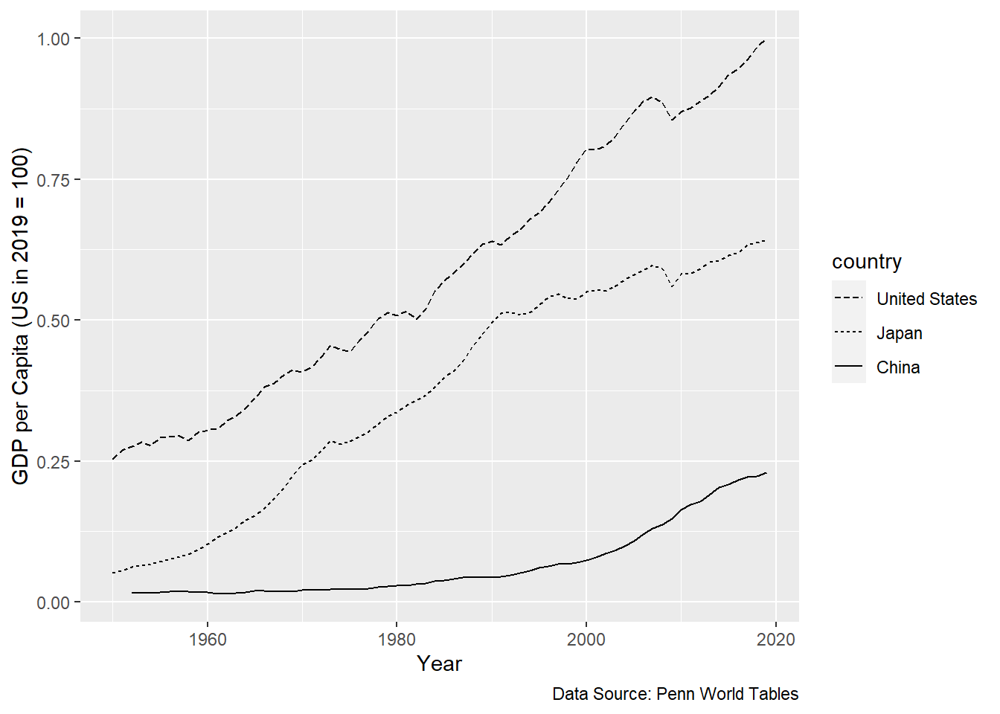

Chapter 2 Economic Growth
In this chapter you will learn:
- The basic definitions and notations relevant for economic growth
- The basic measurement issues, data, historical setting and important growth observations
- The Solow model of physical capital accumulation
- How to interpret data through the lens of the Solow model
- The basics of human capital accumulation
- The basics of technological progress
2.1 Data and Motivation
We will start with the simple observation:
\[\frac{\text{Average income US}}{\text{Average income Ethiopia}} = 50\]
That means that the average American is 50 times richer than the average Ethiopian. Of course, within each country there are very rich persons and very poor persons, but the average level of income is a good starting point for comparisons. In a sense there is nothing special about these two particular countries, one is very rich, the other is very poor. We could have taken other very rich countries like Canada, Germany, Japan, Norway and other very poor countries like Eritrea, South Sudan, Zimbabwe and obtain similar ratios. We will state the first fact:
Fact 1: The ratio of average incomes of rich to poor countries is large, around 50.
What allows us to call this ratio large? What would be a comparison? We can look at regional differences of incomes within countries. In the US we can compare average incomes in a rich state like Connecticut, CT, to average income in a poor state like Mississippi, MS, and we would get
\[\frac{\text{Average income Connecticut}}{\text{Average income Mississippi}}=2\]
Again, there is nothing special about Connecticut and Mississippi. We could have picked other rich states in the US and other poor states in the US and obtained a similar ratio. Or we could pick a rich region of Italy, the north, and a poor region in Italy, the south, and we would obtain similar ratios.
The point of Fact 1 is: Within a country, the income differences across regions are typically small, while across countries income differences are typically large.
These international differences are staggering. If we take $66,000 to be average annual income in US in the year 2019, then applying an income ratio of 50 implies that in the poorest countries average income is $1,300 per year. That is less than $4 per day. Next time you are at Starbucks contemplating a tall skim latte with an extra shot or a similar drink, think of the poorest of the poor in poor countries. Your one coffee would exhaust their entire daily budget.
There are many poor countries that fit in this category. A few years ago, Paul Collier wrote a book called The Bottom Billion. Out of a total world population of about 7 billion people, there are about 1 billion people who are living in countries where incomes are very low and stagnating. There are 1 billion people who live on $ 3 or $4 or less per day and their lives are not improving. In those countries, incomes on average stay relatively constant. There is no hope that their lives are improving. That is the situation for one billion people.
The above data bring to mind the following questions:
- Why are people in some countries so rich and in other countries they are so poor?
- Why are people in Indiana so rich, and people in India so poor?
- Why are people in Connecticut so rich and people in Mississippi so poor?
Figure 1 Differences in Wealth
Why are some so rich and some others so poor? This question can be posed at the individual level. (See Figure 1 above.) Why is Elon Musk so wealthy? Why are there so many people in the US that are struggling financially and barely surviving?
This question can also be answered at the macro or aggregate level. Why are people in some countries so rich and so poor in others? This question has been at the heart of economics ever since in 1776 Adam Smith https://en.wikipedia.org/wiki/Adam_Smith wrote An Inquiry into the Nature and Causes of the Wealth of Nations. There, you find the statement:
“The causes of this improvement, in the productive powers of labor, and the order, according to which its produce is naturally distributed among the different ranks and conditions of men in society, make the subject of the First Book of this Inquiry.”
This is exactly the question why are some so rich and some so poor. In this chapter we will try to answer these questions.
We can take a long run, and I mean really, really long run, like 3000-year, perspective on this question. The picture below, Figure 2.1, summarizes the world economic history over the last 3000 years. Not much happened before the year 1750. There were some ripples, some ups and downs, but by and large average incomes were constant. If incomes rose for a while, for whatever reason, the population expanded and the extra number of people ate up the extra income. This is called the Malthusian regime, named after Thomas Malthus. The economic history before 1750 depicted below is basically the same in all continents, Europe, south Asia, China, etc. There might have been some differences in the levels of income, but the long run growth rate was zero everywhere.
Then in the 1600s something happened in Europe, first in the Netherlands, then in the UK, then in the US and other European offshoots such as Australia, Canada.
Paul Romer, describes how growth slowly took off starting in the 1600 or so when the Netherlands was the wealthiest economy at the time to the 1700 when growth in the UK between 1785 and 1820 was ( a measly) 0.5 % annually.
This is the period we now call the Industrial Revolution. This growth of 0.5% annually does not strike us moderns as a revolution. But we must remember that before that period, there was no growth at all. Nada. Growth was zero. If you go from a world of zero growth for millenia to a world of 0.5% growth for 40 years, surely that is revolutionary. After 40 years, (two generations?), your income has gone up by over 20%.
From 1820 to 1890 growth in the UK averaged 1.4% annually. Incomes went up by a factor of 2.6 in that period. Now that is revolutionary1.
Figure 2.1: Image from Gregory Clark, Farewell to Alms: A Brief Economic History of the World (Princeton, N.J.: Princeton University Press, 2007), p. 2.
One of the crucial national income accounting concepts is this thing called Gross Domestic Product, or GDP for short.
Definition: Gross domestic product refers to the value of final goods and services produced in a country within a particular period, usually a year.
A few remarks are in order:
GDP is not an “end all, be all” measure of the quality of life. It is but one measure of the quality of life. It measures how much resources you have to buy stuff. It does not measure literacy, longevity, environmental quality and other measures of the quality of life we might care about.
When making comparisons of GDP across countries we need to make adjustments for country size. It will not be a surprise to anyone that the US has higher GDP than Norway. After all, the US has about 60 times as many people as Norway. So, when we adjust for population size by dividing each country’s GDP by the number of people, we get for the year 2019. So, Norwegian GDP per person is about 15% higher than in USA. That means that the average person in Norway has a purchasing power that is 15% higher than the average person in the US.
| Country | Per Capita GDP (in USD) |
|---|---|
| United States | 65,000 |
| Norway | 75,000 |
Sometimes when we adjust for country size, we divide GDP not by the population, but by the number of workers. When we divide by, or normalize, by population size we are asking the question: How much stuff is available for consumption per person. This is an opulence type question. When we divide by, or normalize by the number of workers, we are asking the question: How much stuff can each worker produce? This is productivity question. Both questions are certainly valid questions. What kind of data we collect will typically depend on the question we are after.
When making comparisons of GDP, total or per person, it is important that this is not done using the exchange rate of the two currencies used in the two countries. Exchange rates often fluctuate wildly from month to month, week to week, day to day, without really impacting the purchasing power for the typical residents of the countries. These comparisons must be made at what is called “purchasing power parity” to be meaningful.
When making comparisons of GDP, total or per capita, for one country over time, it is important to adjust for inflation. Inflation here means persistent changes in the price level. This is more important when comparisons are made over longer time spans rather than comparing GDP for two adjacent years, say comparing US GDP in 2020 to GDP in 1975. A gallon on gasoline at that time cost 57 cents.
2.2 Basic Notation
Gross domestic product refers to production. Production requires inputs. In most economic models we will treat GDP as an output and we will assume for starters that there are two inputs, which we will call labor and capital. As a matter of notation, we will let
Y = GDP
N = the amount of labor used
K = the amount of capital usedWe can think of the amount of labor being measured either in the total number of workers employed or by the total number of hours worked by all workers in the economy. Capital is the collection of durable inputs used in production. Examples would be the robots on an assembly line, the trucks that bring lettuce from Imperial Valley to Indiana, the computers used for design, the shovels used in construction, etc.
In short we have inputs going in and GDP coming out. But how are the inputs transformed into output? We will refer to this as the production function, F. That is we can write the production function as
\[Y = F(K,N)\]
where F stands for any function which transforms our inputs to outputs. In most application the function F will have particular properties that are appropriate for the given application.
The production function at the level of an individual firm is an engineering description of the production process. There is very little, if any, economics here. If you are running a barbershop, you need barbers and scissors, to produce haircuts. If you are running an oil refinery you need chemical engineers and crude oil and a few other things to produce gasoline. To produce an iPhone you need rare earth minerals, cobalt and such. No cobalt, no iPhone.
At the level of an entire economy the production function is simply a relationship between the major inputs, things like capital and labor. Sometimes, (this depends on the application, the question at hand), we include raw materials, cobalt?, or energy.
A few things should be clear.
- If we use more capital, we will get more output. In “math speak” that is: The function F is increasing in K. That is when we hold the amount of labor constant.
- The same is true for labor. Holding the amount of capital fixed, the more labor we employ, the more output we get. For a fixed level of K, the function F is increasing in N.
2.3 Measuring economic growth:
We let \(y_t\) denote real per capita GDP in period t. For all time periods t. Then \(y_{t+1}\) is GDP, real and per capita, for period t+1. We let gt denote the growth rate of real per capita GDP. Then we can define the growth of real per capita GDP from period t to period t+1 to be
\[g_t = \frac{y_{t+1} - y_t}{y_t}\]
We can calculate this growth rate for GDP for quarterly data, for annual data or at any frequency where data is available. What frequency we use depends on the particular question we have in mind. If we use quarterly or annual frequencies, we are most likely interested in business cycle questions. For questions of long run growth, we might take calculate growth rates over decades or even longer periods.
2.3.1 A thought experiment
This thought experiment goes back to Robert Lucas, Nobel Laureate of the University of Chicago2. from the 1980s. This experiment shows the power of exponential growth.
| Country | Annual growth rate | Doubling time | Income of grandchild/income of grandparent (in 1960-1985) |
|---|---|---|---|
| South Korea | 7% | 10 years | 32 |
| India | 1.5 % | 50 years | 2 |
This thought experiment is based on true data. The two numbers in the first column are the actual growth rates for these countries in that period. A South Korean grandchild will be richer than the grandparent by a factor of 32! This is assuming that a generation comes every 25 years, which is an eminently reasonable assumption. A factor of 32 is huge.
Remember this is per capita and it is already adjusted for inflation.
If we assume that India and South Korea had he same initial starting conditions in 1960, then after 50 years, the typical South Korean will be 16 times as well off as the typical person in India. That is a stunning difference in purchasing power.
To convince yourself of the enormous difference in the quality of life associated with such large growth rates of 7% or so, google images of Seoul in 1955 and in 2015. What a difference, like night and day! (See Figure 3.)
Figure 3 What a difference economic growth can make
2.4 The Rule of 70!
The Rule of 70 is a convenient way to get an idea of how fast exponential growth can be. It allows us to calculate doubling times, if we know the growth rates. - How long will it take for GDP to double if the average annual growth rates in x%? - How long will it take for my $1,000 investment to double if the interest rate is y%? - How long will it take for Covid-19 infections to double if R0 , the average infection rate is 2.3?
The power of exponential growth is often underappreciated.
So here is the rule:
Doubling time = 70/g
where g is the growth rate.
Examples:
If the growth rate is 3.5%. then it will take 20 years for income to double.
The economy in China started to grow like gangbusters around 1990. After 1990 their growth rate has averaged about 7% annually. At that rate incomes will double every 10 years. In 2020 Chinese per capita GDP was about $10,000. Using the rule of 70 we can infer that Chinese GDP per person was: $5,000 in 2010 $2,500 in 2000 $1,250 in 1990 (That is $3.40 per day.)
In the US in 2020 GDP per capita is $65,000. Over the past 120 years the US growth rate has averaged 1.8 % annually. Under this growth rate it takes about 40 years for incomes to double. Then, if that continues, we can estimate future income levels in the US to be: $130,000 in 2060 $260,000 in 2100 Imagine that potential!!!
We can use the data from example 3 to go backwards in history. We can calculate incomes going back in steps of 40 years to get $32,000 in 1980 $16,000 in 1940 $8,000 in 1900 $4,000 in 1860 Of course, all these exercises work well if the growth rate remains constant at the indicated level. And we have to keep in mind that these are long run projections, approximations and that there can be deviations due to business cycles or other more short- term events3
2.5 The Solow Growth Model
We will begin with a workhorse model that can provide some, but not all, answers. No model will ever provide all answers. In the model, named after Robert Solow, we will first trace out the evolution or growth of the capital stock. ### Physical Capital Accumulation
Remember that the capital stock is a durable input in production, still like tractors, computers, warehouses, etc. As the input capital increases (declines) we can expect output, GDP, to increase (decline) accordingly. It will be convenient to follow the evolution of the capital stock. Once we figure out what happens with the capital, we can figure out what happens with GDP.
We will follow a small string of mathematical operations. The math may not always be clear to you. Simply return to the meaning of the variables. We try to show both the math and explain in words what the math means. To test your understanding you should be able to put the below equations into words as well.
We start with an accounting identity. \(K_t\) represents the capital stock today, \(K_{t+1}\) represents the capital stock tomorrow. We let \(D_t\) represent the amount of the capital stock that depreciates in that period and we let \(I_t\) represent the amount of new investments made in the period.
If this is a bit abstract think of a trucking company that owns 1000 trucks. That is their capital stock at the beginning of the year 2020. In that year, 20 trucks are retired and go to the truck graveyard. That would leave the company with 980 trucks. But the company buys 30 new trucks, so at the end of the year the company has 1010 trucks.
The other analogy we can use is water in a pond. During the day water evaporates and diminishes the amount of water in the lake. But at the same time, water enters the pond as well, through runoff from the nearby area and rain that may have ocurred that day.
We call depreciation and investment flow variables. They are like water flowing in and out of the pond. We call the amount of capital a stock variable. It is like the total amount of water in the pond.
Our first equation just says: The amount of capital tomorrow is the amount of capital today minus the amount that depreciates plus the amount that is invested. This is an identity.
\[K_{t+1}=K_t-D_t+I_t\]
This is the same thing as our pond example. Tomorrow’s amount of water, will just be today’s water, plus any that has flowed in, minus any that has evaporated.
To get to the second equation we make the assumption that depreciation is always a constant fraction of the total amount of capital. This is an assumption, that is not necessarily true. In some years there might be more accidents that destroy trucks than in others. There is a certain amount of randomness involved. Here we abstract from this randomness and assume constant depreciation. We call the fraction of the capital stock that depreciates \(\delta\). Of course, \(\delta\) is always between zero and one.
\[=K_t- \delta K_t+I_t\]
To get to the third equation we just use a bit of algebra. We recognize that the first two terms on the right side of the equation contain a common term \(K_t\). So, we factor it out to get the next line.
\[=(1-\delta) K_t+I_t\]
The next step is more substantial, much more substantial. Here we assume that all investment is financed by current domestic savings:
\[I_t=S_t\]
That is, the economy is closed. All investment in the domestic economy comes from domestic savings. The Japanese or the Chinese cannot invest on the US economy. We know that there is typically foreign investment in all economies. Here we rule this out. By assumption.
The first very basic national income accounting identity states:
\[c + i = y\]
where c is consumption, i is investment and y is GDP. This little identity says: Stuff is produced, and you can either eat it, c, or save and invest it, i.
All of this gets us to:
\[=(1-\delta)K_t+S_t\]
\(S_t\) is total savings in the economy in period t. Savings is that part of output that is not consumed.
We can then think that savings can be expressed as some fraction of GDP. That is if GDP is $ 1,000 and savings was $ 200, then savings in this case is \(0.2 \times GDP\)
Let’s use s (lower case) to denote the savings rate in the economy. In the term \(sY_t\) we look at what is the fraction of total income in the economy that is actually saved. Then as we showed above, \(S_t=sY_t\).
\[K_{t+1}=(1-\delta) K_t+sY_t\]
As noted way back in our Basic Notation section, \(Y_t\) denotes output, or GDP in period t. That output is produced with inputs, capital \(K_t\) and labor input \(N_t\) according to the production function \(F\).
For our basic Solow Growth Model, we assume the production function has the following general properties: - For a fixed amount of labor, the output is increasing in the amount of capital used, but at a decreasing rate. - For a fixed amount of capital, the output is increasing in the amount of labor, but at a decreasing rate. - In “math speak” the production function is assumed to be concave. - In “econ speak,” we say that the production function exhibits diminishing returns to each input.
So, we have in the equation below that output, GDP, is produced with two inputs, capital and labor, according to the production function F. The term \(A_t\) below denotes technological progress. (More on that later!)
\[=(1-δ) K_t+s[A_t F (K_t,N_t)]\]
In the next step we simply assume, for now, that the level of technology stats constant. The time subscript on A has disappeared. So, it does not change over time. This is an assumption that we are making, for now. We will address the question of technological progress later.
\[=(1-δ) K_t+s[A F (K_t,N_t)]\]
In the next step, we simply consider one specific example. In that example the parameter \(\alpha\) is any number strictly between zero and one. If \(\alpha\) is large, then capital is very important in production, relative to labor. If \(\alpha\) is small, then labor is more important in production. The appropriate value of \(\alpha\) will depend on the context. In poor countries, agriculture is very labor intensive, low \(\alpha\). In the US, agriculture is very capital intensive, high \(\alpha\).
The particular example below will allow is to illustrate all the important properties and predictions of the Solow growth model.
\[=(1-δ) K_t+s A K_t^\alpha N_t^{(1-\alpha)}\]
One more assumption: The population is assumed to be constant. So we can drop the subscript t in the above expression for \(N\).
In what we have done so far, we have let all variables be upper cases. Upper cases in this model will always denote totals. Upper case K denotes total capital stock, upper case Y denotes total output, upper case N denotes total employment.
We want to be able to express all or variables in per capita terms. Why? - We want to be able to make statements about the income growth of the average or typical person and we want to get away from comparing apples, large countries like USA, China to oranges, small countries like Norway or Switzerland. - We want to be able to compare average income of residents in any country, regardless of country size.
That is why we normalize everything from now by N, the size of the country and will express everything in per capita terms. We will let lower cases represent per capita terms. For example, \(k_t\) will be the per person/capita capital stock in period t. Similarly for the other variables.
Then, dividing both sides of the equation by N, the constant population we get \[\frac{K_{t+1}}{N}=(1-\delta)\frac{K_t}{N}+sA(\frac{K_t}{N})^\alpha\]
Let \(k_t=\frac{K_t}{N_t} = \frac{K_t}{N}\) for all t.
Then we can write the above equation as:
\[k_{t+1}=(1-\delta) k_t+s A k_t^α\]
This is the ultimate expression we will be working with. In our model, this equation will encapsulate the entire evolution of the capital stock. And we can calculate the entire sequence of capital stocks from any arbitrary initial starting point for as long as we like. For the US potential starting points might be the years 1565, 1620 or 1776. For Germany two potential starting points could be 1945 or 1990.
How does this work? Suppose we have estimates for the parameters \(\alpha\), \(\delta\), \(s\), and \(A\). If we also have an estimate for the initial capital stock \(k_0\), say for the US in the year 1776, then we can plug all these estimates into the above equation and calculate \(k_1\), the per person capital stock in period 1. Then we take \(k_1\), the value we just calculated and feed it into the equation to calculate \(k_2\). The we insert \(k_2\) into the equation to calculate \(k_3\). Etc. Etc. Etc. Until the cows come home.
If you are good with spreadsheets or coding, you can try this. Just pick some values for the above parameters and see what happens, how the capital stock grows over time.
There is an alternative way to see how all of this works. Consider Figure ?? below. That figure contains the graph of the above equation with kt on the horizontal axis and \(k_{t+1}\) on the vertical axis. The graph is concave. It must be concave since one part, the first part, is a straight line with slope \((1 - \delta)\) and the other part \(sA(k_t)^\alpha\) is a concave function. So, the sum of the two is also a concave function. This concave function is the one graphed below.
Figure 2.2: Illustration of Capital Stock Evolution in Solow Growth Model.
We start with \(k_0\) and calculate \(k_1\). We do this by starting at \(k_0\) on the horizontal axis and from there we go up vertically to the graph and then read off \(k_1\) on the vertical axis.
Then we take that value of \(k_1\) on the vertical axis, go over to the 45-degree line and from there go down to the horizontal axis. Now we have \(k_1\) on the horizontal axis. This works because the 45-degree line has a slope of one, which means that the rise is exactly the same as the run. From the origin up to \(k_1\) that is the rise. From the origin over to \(k_1\) that is the run.
We repeat this process: From \(k_1\) go up to the graph, then over to the vertical axis to read of \(k_2\). Bring that value of \(k_2\) from the vertical axis over to the 45-degree line, then go down to the horizontal axis and mark that value of \(k_2\) there. Repeat. Etc. Etc.
This animated graphic along with the text above may help understanding in what is going on.
{kind=link}
If we look carefully at the graph above, we see
Prediction 1: The capital stock in an economy increases over time at a decreasing rate. Eventually the capital stock reaches the steady state level ks.
For any economic variable, the steady state value is that one that stays constant forever once it is reached. In the graph above we see that the capital stock increases and gets closer and closer to the value ks. Once the capital stock approaches the value where the graph crosses the 45-degree line, there is no escaping. Once you reach that value, you stay there. Forever. That is the steady state level of the capital stock.
Prediction 2: GDP in an economy increases over time at a decreasing rate. Eventually, the GDP reaches a steady state level.
This prediction follows directly from prediction 1. There are two inputs in production, labor and capital. Labor is fixed by assumption. Capital increases over time. Therefore, output, GDP increases over time. And if capital increases at a decreasing rate, then output must, by necessity, increase at a decreasing rate as well. And if capital reaches a steady state, then GDP must reach a steady state as well.
One of the obvious consequences of the second prediction is that eventually output, GDP, will stop growing. There will be no more growth. That is, essentially, just another way of saying that GDP reaches a steady state level.
The reason is simple: Since there are diminishing returns to capital, at a constant savings rate, over time, less and less will be invested in new capital. As less and less gets invested, the capital stock grows less and less and as a consequence, GDP grows less and less. Eventually, the growth of capital and of output has to come to an end.
Prediction 2’: Consider two economies that are equal in all aspects, they have the same parameter values, but they differ in their initial level of capital per person. Then the growth rate of the economy with lower initial capital stock will have higher growth rates and therefore catch up with the richer economy.
This is known as The Convergence Hypothesis: GDP per capita in these economies is predicted to converge. Whether this is true in the data, in which data and to what extent is an interesting question and there is a large literature on this issue.
2.6 Solow Model and Data
We will start with data on three large economies, The United States, Japan and China going back to 1950s. We will be utilizing Penn World Tables for the data. In the supplemental materials we include the code used to generate the figures.
Comparing the US to Japan between 1960 and 1990 we see what looks like convergence. The difference between the two incomes is getting smaller in that time period. Those of us who followed the news in the 1970s and 80s recall a sense and perhaps a fear that Japan would overcome to US and become the dominant economy in the world. In hindsight this fear was totally unfounded. Even in the 1980s, Japanese income was still much, much lower than US income.
## Warning: Removed 2 row(s) containing missing values (geom_path).
And then something happened in Japan. Growth went AWOL. It disappeared. The US economy kept on growing. The gulf between these two economies widened.
The punchline: Solow like convergence between the US and Japan? Yes, but only initially. After 1990, definitely divergence.
How about the China-US comparison? That comparison only makes sense after 1985 or so. The period before 1980 was plagued by very destructive periods and initiatives such as the Cultural Revolution. It is not surprising that incomes cannot grow under such circumstances. But after 1990, there is a definite convergence between US and Chinese average income. The Chinese economy seems to have grown at unprecedented rates for a long time. There is now, if you follow the news, a fear that the Chinese economy will catch up with the US economy and even overtake it.
But: what the future will bring remains to be seen.
The next figure below, Figure 2.3, illustrates similar stories, not in terms of levels of income, but in terms of growth rates. The growth rates are 10-year averages so as to filter out business cycle changes. We want to filter out, ignore, the business cycle stuff so we can focus on long run growth.
## Warning: Removed 3 row(s) containing missing values (geom_path).Figure 2.3: High growth rates in poor countries, low growth rates in rich countries.
For the US the growth rate looks rather constant. There are some ups and downs, but if we tried to fit a straight line into the US observations, that straight line would be rather flat without any clear trend. That is not exactly good news for the Solow model. The Solow model predicts declining growth rates. It is hard to see declining growth rates in these data for the US.
The data on Japanese growth rates look more like the Solow prediction. Even though there are wild swings in these growth rate data, the overall trend is clearly downward. Of course, it is a fair and useful question to ask why there was such a large upward spike in the Japanese growth rate in the 1990s, or, perhaps equivalently, such a huge drop in growth rates in the 1970s and 80s. But here we are concentrating on more long-term phenomena. For Japan, the overall trend in the growth rates is clearly down, which is consistent with the Solow model.
How about China? The growth rates for China are rising, inexorably basically starting from the 1960. This seems to be in total contradiction to the Solow model. True. But I think we need to remember that in the 1970s China is emerging out of the Maoist economy with all its shortcomings and distortions. The Solow model was not designed to answer any questions about such transitions. It was designed to answer questions about stable market economies like the US or France or Norway or Japan. So, the failure if the Solow model to be consistent with the data is not really a failure of the model.
The failure of your TV to take you to the Chicago airport is not a failure either. It was not designed to do that.
2.6.1 Post WWII
The Solow model does well in the post WWII context. See the Figure below. In 1945 Germany, France, the UK were all more all less bombed out. See the picture of Dresden in 1945 below in Figure 7.
Figure 7 Not much capital there.
Without a doubt, the US at the time was the biggest economic power with the highest per capita income. Figure 2.4 below shows: (i) initially the growth rates were high and then they declined over time. (ii) the growth rates in the bombed-out countries were higher than in the US. In Europe, we see large scale conference of real per capita incomes. This convergence is certainly consistent with the Solow model predictions.
## Warning: Removed 6 row(s) containing missing values (geom_path).Figure 2.4: High growth rates in poor countries, low growth rates in rich countries.
If we take a larger sample of countries in Figure 2.5, we see some evidence of convergence. See below. Countries with higher(lower) levels of income experience lower(higher) growth rates.
Figure 2.5: High growth rates in poor countries, low growth rates in rich countries.
This is for relatively short periods. But if we take a longer historical view, going back 250 years with a larger set of countries, as in Figure 2.6, we see not just divergence, but DIVERGENCE BIG TIME. This is actually the title of the paper from which the picture below is taken.
Figure 2.6: Massive divergence over the long haul. Source: Pritchett, Divergence Big Time, 1997.
The data in the next two figures, Figure 2.7 and Figure 2.8, for the US are also not kind to the Solow model. These figures contain data about long run growth in the United States. The figure below shoes the data for real per capita income for the US from 1880 to 1987. The vertical axis is on a logarithmic scale. Using the logarithmic scale makes it easier to see whether growth is constant, increasing or decreasing over time. If you look at the picture you see something that is truly amazing: an almost perfect straight line, with the obvious deviation of the Great Depression and WWII. Apart from that: A perfect straight line.
Absolute constant growth. Over a very long period.
You can even use the data from before the Great Depression, fit a straight line into that subset of the data and use that straight line, the data from before the Great Depression, to “forecast” income, real and per capita in 1985. If you did that you would be off by the price of a decent hamburger. In other words: that forecast is right on the money.
This exercise was actually performed by Charles Jones, in the paper mentioned below.
The punchline: In that 100-year time period, the growth rate in the US of real per capita income is constant.
That is a blow to the Solow model.
Figure 2.7: On a logarithmic scale growth for US looks very constant. Source: Jones, Charles, Time Series Tests of Endogenous Growth Models, QJE 1995.
The next graph makes the same point of constant growth in a different way and points out why the constant growth is really very remarkable. The bottom panel shows the growth rates of real per capita GDP for the US economy again roughly for a 100-year period. Of course, there are fluctuations, ups and downs. But, if you fit a straight line in the data, it is flat. Totally flat.
The growth rate is constant in this period.
At 1.8% annually.
This is a number you must remember.
Why is this number important? In just about every election going back to the 1980s, some candidate for President promises to pursue a policy or set of policies that will increase the growth rate to 4% or higher. Is this reasonable? Believable?
When these candidates promise 4% growth or higher, they usually do not talk about per capita growth, so we have to think about that a bit carefully. Over the last 50 years the population growth rate has been less than 1% per year with a clear downward trend.
If we add the 1.8% of real per capita growth and at most 1% of population growth we get 2.8%. And that is an optimistic upper bound since population growth has been declining. So, any politician who promises 4% or higher must have something up his/her sleeve that is not revealed in the historical record. Perhaps these candidates know something that we don’t know. But then it would be incumbent on them to fill us in on all the details of how such high growth can be accomplished. Otherwise, why would/should we take such claims seriously?
The figure below also points to why the constancy of the growth rate is really an amazing thing. The top panel shows the fraction of GDP collected as income taxes. This fraction increases massively in that period, yet there is no discernible influence of this huge tax increase on the growth rate. Perhaps that is amazing. But there is more.
Over this period education has also increased massively. More and more students are going to college. Average or median years of schooling have increased, almost doubled. This has no discernible impact on the growth rate.
The fraction of women entering the labor force has increased massively over this period. Female labor force participation increased from about 32% in 1950 to about 60 % by the year 2000. Again, there seems to be no discernible impact on the growth rate.
Longevity has increased tremendously. Life expectancy has increase from about 46 years in 1900 (that is for males) to about 74 years one hundred years later. This huge increase in life expectancy does not seem to have made any difference to the growth rate.
None of these changes seems to have had much, if any, impact on the economic growth rate. Perhaps that does qualify as being totally remarkable.
Figure 2.8: Constant growth rates. Source: Stokey, N. and S. Rebelo, Growth Effects of Flat Rate Taxes. JPE, 1995.
If we take data for more recent years for the US, we see, In Figure ??, evidence of declining growth.
Figure 2.9: Evidence of declining growth rates. Source: FRED
We will have to confront the questions: - Why have growth rates in the US been declining? - Is this decline good or bad? ## Human capital accumulation
In the Solow model we considered in the previous sections, there was only one factor to be accumulated: physical capital. In this section we will allow for two augmentable factors: physical capital and human capital.
By human capital we simply mean all the marketable skill. In the Solow model the production function is given by
\[y_t=A F(k_t)\]
Recall that when we hold labor constant, then output is basically a function of capital only and the production function exhibits diminishing returns to capital. We will now generalize the production function to
\[Y_t = A F (K_t, H_tN_t)\]
In this formulation \(N_t\) stands for labor as before. Labor could be measured by the total number of people employed or by the total number of hours worked. \(K_t\) is the total capital stock, \(Y_t\) is output of GDP and \(A\), as before is a measure of technology.
What is new here is \(H_t\), which stands for human capital. What we do here is we multiply \(H_t\) and \(N_t\) together to get
\[H_tN_t\]
We call this product “effective labor.” We can think of \(N_t\) as hours worked. If we multiply the hours worked \(N_t\) with skill or human capital \(H_t\) we can get a measure of how much can be done or accomplished in the time spent working. We will refer to \(N_t\) as “raw labor” and to \(H_tN_t\) as “effective labor.”
Effective labor varies both across countries and over time. The average Norwegian worker has more human capital and thus more effective labor then the average Nepali worker. Also, the typical American worker now has more human capital than the typical American worker had 100 years ago.
Just like physical capital, human capital can be accumulated; it can grow. It can also depreciate or become obsolete.
There are multiple ways to accumulate human capital.
- Formal schooling
- Learning on the job
- Leaning by doing
There is a large literature on each one of these components. Here we will focus on formal schooling, partially because in many countries formal schooling budgets take up large fractions of national income, GDP. In some cases, this is more than 5 or 6 % of GDP.
So, one way to measure formal schooling is through expenditures. How much do we spend as a fraction of GDP on formal public education? When answering this question we have to be cognizant of the fact that there is also a significant private expenditure in formal schooling.
The second way to measure formal schooling or education is simply to ask how much schooling, how many years of schooling do students get. Of course, in every country there will be a distribution. Often, we categorize this the different stages of education completed, such as college completion or high school completion.
Figure 14 below shows that education in the US has increased tremendously. The fraction of the labor force that has completed college has increased substantially while the fraction of the labor force that has only finished elementary education or not finished high school has fallen drastically.
GENERATE THIS IMAGE Figure 14 Increasing schooling time
Most countries have seen similarly large increases in years of schooling. Measured in average or median years or schooling. Or measured in the fraction of the labor force that has completed college.
Beware of measurements!
Measurements should be useful for the purpose at hand.
Measurements should not be too costly.
Both of these are worthwhile considerations.
But, sometimes measurements are taken simply because they are cheap. Please consider the link below. There are reports from central planning in the Soviet Union by plans being fulfilled by a very small number of huge nails or, alternatively, by a huge number of tiny nails. It all depended on the specifications given by the planner to the factory.
See the cartoon below.
https://www.quora.com/Whats-the-meaning-of-this-Soviet-cartoon
Incentives work!
They work really well.
There is a similar story about shoes in the Soviet Union. People were always lining up for shoes. Always. I mean always. It turns out that the Soviet Union at the time produced hundreds of millions of shoes per year. More shoes than were produced in the US.
The problem: They were just shoes, but not shoes consumers wanted. They were just not comfortable. And forget fashionable.
So the statement above about people standing in line for shoes needs a qualification. People were standing in line not just for shoes, not just for any pair of shoes. They were standing in line for comfortable shoes, for durable shoes, for practical shoes, for shoes that fit their needs.
Why am I telling you nail and shoe stories?
In education there is the risk, that we are looking at numbers, data, measurement in a way that is very similar to the way data were looked at in the nail and shoe stories.
In education we sometimes look at numbers that are easy to collect. And sometimes these numbers are not meaningful. Or at least, it is not clear how meaningful they are.
- Years of schooling.
- The fraction of 18 years olds going to college.
- The number of hours spent studying All these data fall into the category of questionable data. Whether data is questionable ALWAYS depends on a particular purpose: Is that data useful for my particular purpose?
So what could/would be our purpose here? We would hope that education makes people more productive. If education makes people more productive, we would see the effect of education in GDP.
Now, before we take a closer look at the connection between education, we can use some introspection to think about how useful or how accurate the above three measure can be.
Go back to high school and think of all the students who were you in graduating class. At that point they all had 12 years of schooling. Now consider the difference, if there is any, in the marketable skills among all the graduates in your class? Is that difference small? Is it large? How much do we miss in terms of productivity if for all these students, we just record 12 years of schooling?
Now think of two typical 18 year olds going to college. They are the same in all respects, expect one: Jill attends IU Kokomo; and Jackie attends Princeton. Should both Jackie and Jill be counted equally as attending college? Which one might be more productive in the labor force? How big might such differences in labor productivity be?
John and Jack both are first year students at IU. Both are studying psychology. Both John and Jack report that, outside of class, they spend 20 hours per week studying. Would/should we expect John and Jack to learn equally during those 20 hours. John concentrates on his work and Jack texts with his girlfriend, checks the stock market and pays his bursars bills while while doing his homework. Should we count these two sets of 20 hours the same?
Apart from these issues, all of these measurements of inputs, not of outputs. The outputs are what is actually learned. What are the marketable and other skills? We should care about the outputs, more than the inputs. The outputs are hard to measure, the inputs are easier to measure. So, we will measure the inputs.
Hanushek and Kimko in their 2000 research paper: Schooling, Labor-Force Quality, and the Growth of Nations make a big effort to get this right. For a bunch of countries, they look at the correlation between years of schooling and economic growth. They do find a positive correlation, exactly what one might expect. But correlation can go both ways: More years of schooling could imply higher growth. Higher economic growth induces people to get more schooling. So inferring causality from more years of schooling to economic growth is dicey.
There is more. We actually have data on math and science scores of students at the high school level that are comparable across countries. This is a measure of an output, things that students actually learned and know. As an aside, the US performance in these international tests is very mediocre.
If we introduce this measure of student scores in our statistical analysis of schooling and economic growth, the correlation between years of schooling and economic growth goes to zero and the correlation between learning scores and economic growth is positive. And it is large. Very large.
A one standard deviation increase in these test scores is associated with a 1.4% increase in the growth rate. This is huge. Recall that for the longest time the growth rate of real per capita income in the US has been 1.8% annually. So, if, somehow magically, or perhaps less magically by prudent choice of education policy, the test scores of US students could be increased by 1.4% to 3.2%. That is big. Very big.
Imagine that we start with an income of $60,000. In one case we have a growth rate of 1.8% and in the other case we have a growth rate of 3.2%. Then we have income after 10 years
\[\$60,000 (1.018)^{10} = \$71,718 \]
\[\$60,000 (1.032)^{10} = \$82,214\]
A ten thousand dollar difference is large, by any stretch of the imagination. We could have made this appear even bigger by calculating differences twenty of thirty years out.
There are two more stunning observations that come out of the above paper. 1. Economic growth in that sample of countries is uncorrelated with public expenditures on education. 2. The test scores in that sample of countries are uncorrelated with public expenditures on education.
Putting these two things together means that the amount of resources does not matter that much. What matters more is what you do with them.
2.7 Technological progress
We write the production function as
\[Y_t = A_t F( K_t, H_tN_t)\]
where the subscript t stands for the time period and the symbols Y, A, K, H, N stand for, in order output/GDP, productivity, physical capital, human capital and labor time/ hours worked. So far, we have addressed the growth of physical and of human capital. That leaves the question: - How does productivity grow? - What factors influence the growth of technology? - What factors influence technological progress?
We will use the simplest possible model to give an answer to this question.
Note that I did NOT say that I will answer this question. I said to “provide an answer.” There are many ways to provide SOME answers.
One simple way to provide an answer is simply to assume that the new ideas that generate technological progress are created by hiring workers to create new ideas. These workers are called, surprise, surprise, scientists. We let \(S_t\) denote the number of scientists hired, then we posit that technological growth is described by
\[ \frac{A_{t+1} - A_t}{At} = B S_t\]
The left- hand side is just the percentage growth of productivity. The right- hand side is just the resources allocated to research. This could include the number of scientists employed, perhaps weighted by their human capital, but also the labs, the buildings for the labs, the lab equipment, and supplies and energy to run the lab experiments. The relationship is very simple: The more resources allocated to science, the higher is economic growth. More precisely, as specified, this relationship is linear. A doubling of resources leads, in this specification, to a doubling of the growth rates. This is an assumption; the world does not have to look like this.
We must keep in mind that there is a feasibility or adding up constraint. There is a total number of workers in an economy. They can be either production workers or scientists/researchers who produce ideas. If we let N be the fraction of production workers and S the fraction of scientists, then we must have
\[ N + S = 1 \]
We can now take a look at technological progress in a few sectors. Perhaps the most celebrated example of technological progress is Moore’s Law. Moore’s law was promulgated in the early 1970s by Gordon Moore, one of the co-founders of Intel, and meant as a forecast that the number of transistors on an integrated circuit, perhaps we can think of this as computing power, would double ever 2 years. This “law” stood the test of time. Over the last 40 years this relationship has held up very well. Note the scale on the vertical axis in Figure 2.10. In 40 years going from 2,300 in 1971 to 2,600,000, 000. That is nothing short of spectacular.
Figure 2.10: Moores Law
Considering that graph above, one could be very optimistic. There does not seem to be any break in that trend. The best fit in these data points seems to be a straight line with constant slope. Since the scale on the vertical axis is logarithmic, this looks like exponential growth at a constant rate. If there were no extra information one could become quite sanguine and expect constant exponential technological progress to continue.
Alas, there are other things to consider. What did it take to maintain the incredible growth of computing power summarized by Moore’s law?
Figure 2.11: Moore’s law requires huge increases in the number of researchers
Figure 2.11 shows that over time the number of workers/scientists required to maintain Moore’s law want up by a factor of 25 over that period.
A factor of 25!
We can conclude from these two numbers that back in the 1970s, it was easier to double every two years. Now it is harder to double. It takes more resources to double.
That is diminishing returns.
There is no hint in the data, these two series in Figures 3 and 4, that future doubling will require fewer inputs.
We picked the low hanging fruit first. Now we got to climb higher.
Figure 2.12 shows something similar for agriculture: Yields per acre have been growing, but at declining rates but the number of researchers has been rising tremendously. Wheat, corn, soybeans, cotton; its all the same story.
Figure 2.12: For agriculture it seems the same holds true. Increases in productivity come at an ever increasing resource requirement.
Low hanging fruit was picked long time ago.
Figure 2.13 panel b shows the same story for mortality or survival from breast cancer. Mortality rates are way down, and they are declining, albeit at declining rates. Research effort measured by scientific publications and clinical trials are way up.
Figure 2.13: For health again it seems the same holds true. Increasing productivity comes at the cost of ever increasing resource requirements.
Same old song: Low hanging fruit was picked years ago.
Figure 2.14 shows how drastic these diminishing returns are. Peak productivity was reached around 1990 when one clinical trial was responsible for about 16 life years saved per 100,000. Now we are down to 1.
A drop from 16 to 1.
Figure 2.14: sample caption
Most low hanging fruit seems to be gone. If we want to get any fruit, we got to climb REEEEAAAAAALLLLLLY high.
Since there seem to be many industries where technological progress is only achieved with the help of ever-increasing numbers of scientists it is a fair question to ask whether this is true also in the aggregate, i.e., for the total economy.
The answer to this question is a resounding YES. Figure 1 shoes aggregate technological progress for the US economy over a 70-year period starting with the 1930s. The pattern is clear: There is no increase at all in the rate at which technology has progressed. If anything, there is a declining trend.
Figure 2.15: sample caption
Figure 2.15 shows that this rise in productivity (at a declining rate) has been accomplished by an increase in researchers in the order of a factor of 20! This is huge.
Just like at the level of individual industries or activities, there is no evidence that these trends will be reversed. We can, with some degree of confidence predict, that future economic growth will be lower than past economic growth.
Those politicians running for election, who promise to make the economy grow at 3 or 4 % annually, have to work really hard to fulfill their promises, since they are working against strong headwinds that are basically beyond their control.
(All the above figures are from the first paper listed below.)
The second paper below addresses the questions: - What factors are contributors to the growth of real per capita GDP or output for short? And how important are they? - What factors are contributors to technological progress or the growth in productivity? And how important are they?
Given the production function specified above, we can decompose the growth in output into the following components 1. Changes in the ratio of capital to output 2. Changes in educational attainment/ growth in human capital 3. Changes in the employment to population ratio 4. Changes in the fraction of workers in production rather than research.
Given the production function for new ideas we can decompose the growth rate of new ideas above we can decompose the rate of technological progress into: - Changes in the fraction of workers employed in research rather than production - Changes in the overall labor force.
How big is each of these factors? Jones (2021) provides the estimates. In the US starting in the 1950s, an increase in fraction of people employed is responsible for growth of 0.2%, the increase in human capital per person is responsible for growth of 0.5 % and technological progress contributes 1.3% for a total of 2% annual real per capita growth. Productivity growth or technological progress is responsible for the lion’s share of growth.
Population growth contributes 0.3 % to growth of productivity, while research intensity, hiring more researchers contributes 0.7 % to productivity growth.
What is the potential for future economic growth?
It seems difficult to imagine that educational attainment can still increase substantially. In the US median years of schooling increased relatively rapidly till about 1980, but then the curve flattened out and that growth diminished. It is unlike that that growth will increase in the near term.
We are already hiring more and more researchers to generate more ideas with diminishing returns. Hiring more and more researchers comes at a cost of fewer workers in production with a corresponding current output decline. It seems hard to think of factors that can turn the declining research productivity around.
How about population growth? As the population grows, there are potentially more researchers as well. But population growth rates are falling worldwide?
Perhaps we can do a better job identifying and fostering future Einsteins and Curies? According to some estimates only 12% of inventors are women, while roughly half of the population is women. Policies that increase that number might increase growth by 0.3%.